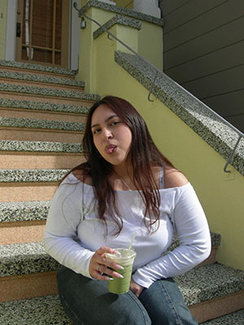
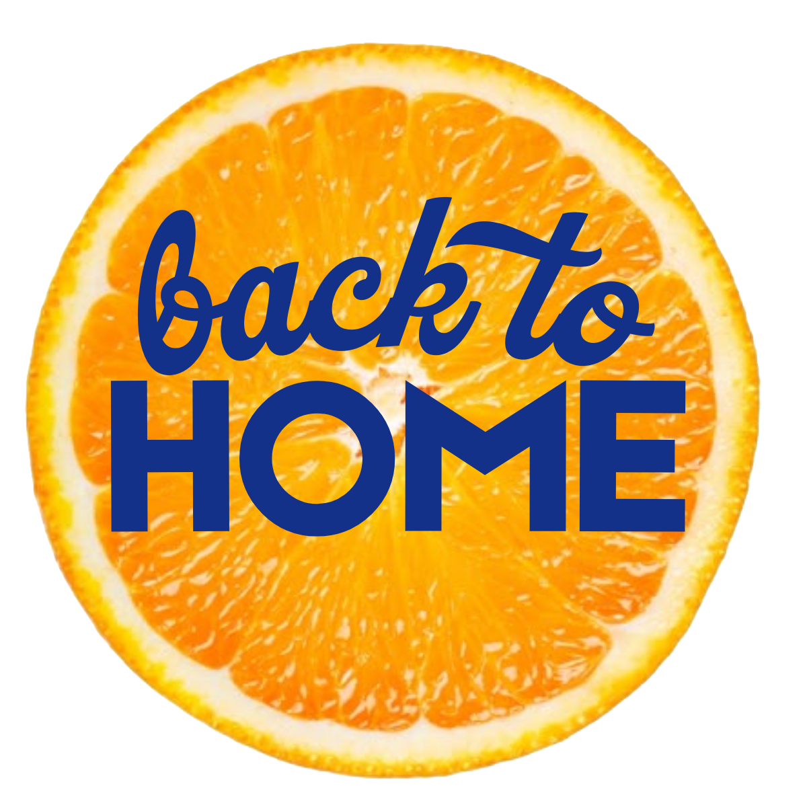
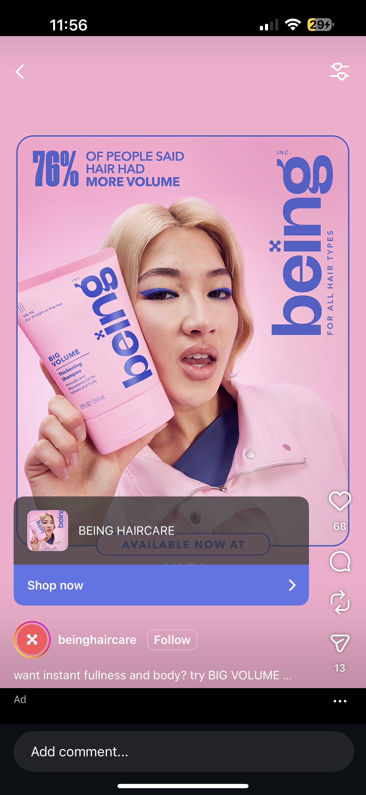
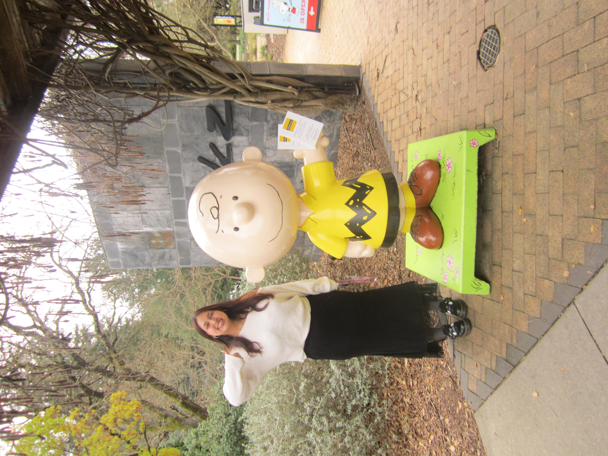
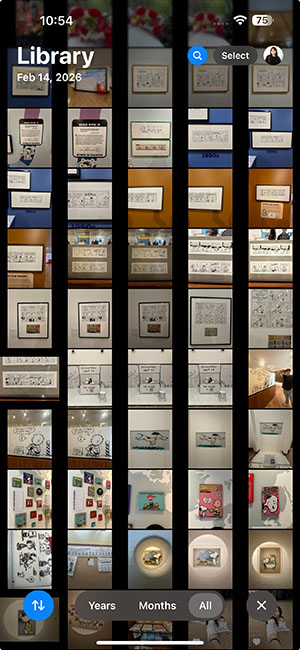
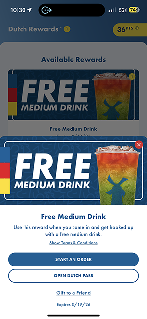
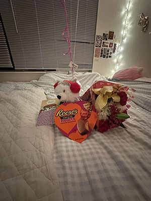
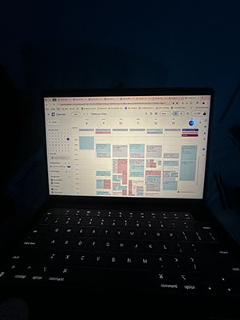

Hi, I'm Brenda Reyes!
I am a Design major, Business minor at USF! Welcome to my feed! Let's take a look into a unique three-day weekend for me! I got to celebrate Valentine's Day with a special someone!!! This recap will go through my lovely morning & then touches on what I usually do for school!

Of course, I always start off by snoozing my many alarms (it always takes me a while to wake up...)!

My boyfriend has a lovely day for us planned ahead since it will be our third Valentine's Day together. I was very excited!! I had seen many TikToks of this museum so I was super duper happy when I found out I was going!
It's a bit of a drive, but we took my car! I'm usually in charge of AUX, but I like using my DJ on Spotify since I am super indecisive with music.


During our car ride I was on Instagram and, for context, I am now the VPEA for my sorority (KAϴ) and part of my role is to connect with external brands to send us PR and for media collabs -- so... every single brand I see I must take a photo or screenshot so I can give myself inspo!

We have arrived! Obviously needed to take a photo my main man, Charlie. I'm a big fan of his dog.

The museum was so wholesome, I took so many pictures... (rip my phone storage, sigh)

After the lovely museum, my boyfriend let me pick our food spot and I needed to indulge into my guilty pleasure .... I fear I love Olive Garden!!!

After our lunch we headed to Davis where he goes to school to spend our three-day weekend there! I always like getting Dutch Bros when I'm there since we don't have a close one in SF and lucky me -- I had a free drink reward!!!
After enjoying my Dutch drink & hanging out, I try to lock in for the orgs I'm involved in. The "Jazz in the Background" playlist on Spotify puts me in automatic work mode so thank you to the intern who created that playlist.
Next, I needed to send a few more emails to brands. We have events coming up that the president asked me to get PR for so I'm trying my hardest! Emailing many, many brands...

My boyfriend also surprised me with some very cute Valentine's gifts!! How sweet...

I end my day by rechecking my Google Calendar to plan for the next day!